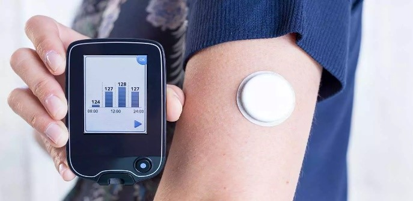
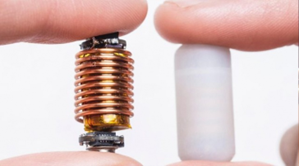

Iot en la Medicina
El Internet de las cosas (IoT) ha abierto un mundo de posibilidades en la medicina: cuando se conecta a Internet, los dispositivos médicos comunes pueden recopilar datos adicionales invaluables, dar una idea adicional de los síntomas y las tendencias, permitir la atención remota y, en general, brindar a los pacientes más control sobre sus vidas y tratamiento. Es tan importante que tiene incluso sus propias siglas: el IoT en la medicina es IoMT. Se le llama así a la tecnología médica conectada en red y, a su vez, conectada también a medios de tecnología de la información. El IoMT resultó vital porque permite que los pacientes puedan desarrollar su vida sin tener que acudir a consulta ya que dispositivos como los gadgets se ocupan de la gestión de datos y la manipulación de los mismos al enviarlos automáticamente a centros de datos. Y es que un simple gadget puede monitorizar el estado de salud y enviar esta información en tiempo real a los facultativos médicos con notificaciones de nuestro estado de salud y advertencias de peligro.
Entonces a la hora de hablar de IoT en la medicina, podemos hablar de dos vertientes:
¿Qué ventajas aporta al sector médico el IOT?
Aplicaciones actuales del IoT en medicina
El uso del IoT en medicina es cada vez más frecuente. En el 2020 se detectaron unos 600 millones de dispositivos médicos conectados, lo que supuso que este mercado creciese más de un 26 %. Estos son algunos de los ejemplos de aplicaciones actuales que demuestran su exitoso presente y que permiten prever un futuro prometedor:
1. Audiómetros electrónicos

En la salud auditiva, la utilización del internet de las cosas permite detectar y tratar mejor los problemas de oída. Por ejemplo, ya existen algunos audiómetros digitales que aportan datos constantemente. Uno de ellos lo desarrolló la compañía Kiversal: el Audixi 10, que puede conectarse a varios dispositivos e incluye otros servicios como un gestor de citas.
2. Monitor de glucosa
Para los pacientes que sufren de diabetes del tipo 1 o 2, cabe la posibilidad de controlar sus niveles de azúcar en sangre a través de un dispositivo inteligente. Este se conoce como monitor de glucosa continuo (o CGM, por sus siglas en inglés) y mide incluso patrones o tendencias, además de informar en tiempo real del estado de esos niveles.
3. Pastillas inteligentes
Ya existen las pastillas inteligentes gracias al IoT en medicina. Píldoras como las de Abilify MyCite están dirigidas a tratar ciertas enfermedades como la esquizofrenia o el trastorno bipolar. Funcionan con un sensor digital incorporado que se activa al disolverse en el estómago. De esta forma, los médicos pueden saber con certeza si sus pacientes siguen el tratamiento o no.
4. Lentes de contacto e inhaladores
Existen lentes de contacto dotadas de inteligencia como las Triggerfish, que pueden detectar modificaciones en el tamaño de la pupila, el iris o la retina del ojo. Por otro lado, los inhaladores inteligentes son una realidad muy útil para pacientes con problemas respiratorios.